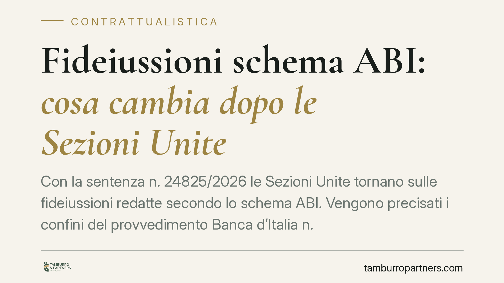

Fideiussioni schema ABI: cosa cambia dopo le Sezioni Unite
Con la sentenza n. 24825/2026 le Sezioni Unite tornano sulle fideiussioni redatte secondo lo schema ABI. Vengono precisati i confini del provvedimento Banca d'Italia n. 55/2005, il rapporto tra clausola 'a prima richiesta' e art. 1957 c.c. e la rilevanza di accertamenti antitrust successivi al 2005. Una pronuncia destinata a incidere sul contenzioso bancario in corso.

Il contesto
Lo schema ABI per le fideiussioni omnibus è al centro del contenzioso bancario da oltre un decennio. Il punto di partenza resta il Provvedimento della Banca d'Italia n. 55/2005, che individuò in tre clausole dello schema una violazione della normativa a tutela della concorrenza (l'intesa restrittiva vietata dall'art. 2, comma 2, della legge n. 287/1990).
Le clausole sotto osservazione sono quelle di sopravvivenza, di reviviscenza e di rinuncia ai termini dell'art. 1957 c.c. Attorno alla loro validità si è costruito un contenzioso di massa, con esiti giurisprudenziali non uniformi fino alle Sezioni Unite del 2021 (sent. n. 41994/2021), che avevano optato per la nullità parziale del contratto, limitata alle sole clausole illecite.
Cosa dice la nuova pronuncia
La sentenza n. 24825/2026 interviene su tre nodi rimasti aperti.
Primo: l'ambito temporale del provvedimento del 2005. Le Sezioni Unite chiariscono che l'accertamento della Banca d'Italia fotografa un'intesa in un momento determinato. Non produce un effetto automatico e perpetuo su ogni fideiussione sottoscritta negli anni successivi. Per i contratti stipulati dopo il 2005 occorre verificare in concreto se l'intesa restrittiva fosse ancora in atto.
Secondo: la rilevanza di un nuovo accertamento AGCM. Un provvedimento antitrust successivo può costituire elemento di prova qualificata (la cosiddetta prova privilegiata) per le fideiussioni post 2005, ma va valutato nel suo specifico perimetro temporale e oggettivo. Non si estende per presunzione a periodi diversi da quelli accertati.
Terzo, e più delicato: il rapporto tra clausola 'a prima richiesta' e art. 1957 c.c. L'art. 1957 c.c. impone al creditore, per conservare la garanzia, di agire contro il debitore principale entro sei mesi dalla scadenza dell'obbligazione. La clausola 'a prima richiesta' - tipica della garanzia autonoma - tende a svincolare la banca da quest'onere. Le Sezioni Unite precisano che la presenza di tale clausola non trasforma automaticamente la fideiussione in garanzia autonoma e va coordinata con la disciplina della nullità parziale.
Implicazioni pratiche
Per il fideiussore la pronuncia significa che l'automatismo non esiste più. Non basta richiamare lo schema ABI e il provvedimento del 2005 per ottenere la declaratoria di nullità delle clausole. Occorre collocare il contratto nel tempo e provare la sussistenza dell'intesa restrittiva al momento della sottoscrizione.
Per la banca si conferma la tenuta del contratto nella parte non viziata: la nullità resta circoscritta alle tre clausole, mentre l'obbligazione di garanzia sopravvive. Il che riduce l'impatto delle contestazioni meramente formali.
Per i contratti stipulati dopo il 2005 il quadro probatorio diventa centrale. Chi contesta la validità delle clausole dovrà fondare la propria posizione su accertamenti antitrust pertinenti per periodo e oggetto, non su un richiamo generico al provvedimento originario.
Nei giudizi pendenti è prevedibile un adeguamento delle strategie difensive. Le eccezioni costruite sull'automatismo rischiano di non reggere; quelle documentate sul piano temporale e probatorio guadagnano peso.
Cosa fare in concreto
- Verificate la data di sottoscrizione della fideiussione: è il primo elemento per stabilire quale regime probatorio si applica.
- Recuperate il testo integrale del contratto e isolate le clausole di sopravvivenza, reviviscenza e rinuncia ai termini dell'art. 1957 c.c.
- Identificate gli accertamenti antitrust pertinenti al periodo di stipula, non limitandovi al provvedimento del 2005.
- Valutate la presenza della clausola 'a prima richiesta' e le sue interazioni con la disciplina della nullità parziale.
- Rivedete le difese nei giudizi pendenti per allinearle al nuovo onere probatorio, prima delle prossime scadenze processuali.
Conclusioni
La sentenza n. 24825/2026 non chiude il contenzioso sulle fideiussioni schema ABI, ma ne sposta il baricentro dall'automatismo alla prova. Il contratto va analizzato nel suo contesto temporale e documentale. Consigliamo di sottoporre a revisione le garanzie in essere e le posizioni contenziose aperte, per misurarne la tenuta alla luce dei principi affermati.
Contributo informativo a cura di Tamburro & Partners - Avv. Giuseppe Tamburro. Non costituisce parere legale.
Ogni contratto ha il suo equilibrio.
Se vuoi una revisione delle clausole o una redazione su misura, scrivi allo studio. Ti rispondiamo entro un giorno lavorativo.